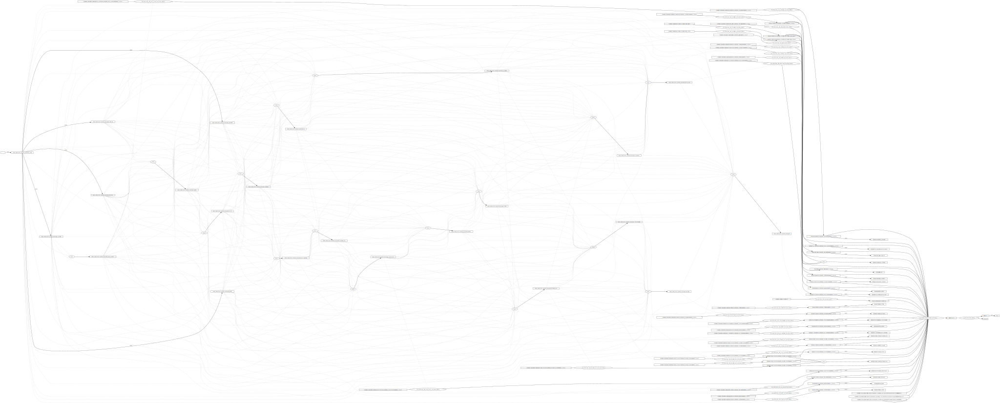

2024 CSCS C++ course: modules
Table of Contents
1. Intro: Why do we need modules? What are modules? And what are they not?
1.1. Repeated inclusion
- Headers parsed again in each translation unit
- Include guards required to avoid duplicate definitions
#pragma onceis not standard
1.2. Transitive includes
- Programs can compile without explicitly including everything they need
- Break when transitive includes are removed
1.3. ODR: One definition rule
- Must have exactly one definition of every non-inline entity
- Can have multiple inline definitions as long as they are the same
- If you fail to follow this: undefined behaviour
1.4. Stateful includes
#define NDEBUG #include <cassert>
#define WIN32_LEAN_AND_MEAN #include <Windows.h>
struct foo { #ifndef NDEBUG int debug_var; #endif };
#define private public
#include <complex.h> template <std::size_t I> struct;
1.5. Visibility
struct foo { private: void bar(); public: void baz(); };
__attribute__((visibility("hidden"))) void foo() {}
1.6. C++ modules
- C++ modules encapsulate translation units more strongly than previously
- Names are attached to modules
- Only preprocessor definitions set during compilation of module can affect its behaviour, it can’t be changed anymore when importing
- No (forced) separation of interface and implementation to hide implementation
- Import order does not matter
- No huge includes due to transitive includes
- Better compilation times
- No include guards
- No risk of missing required includes
- Modules added in C++20
stdandstd.compatmodules added in C++23
1.7. Modules are orthogonal to namespaces
export module foo; namespace bar { void baz(); }
1.8. Modules are not hierarchical
- Modules can be named
foo.bar.bar - The standard couldn’t care less, this is simply convention
foo:baris a module fragmentbarinside the modulefoo, to be covered later- closest thing to a submodule, but only one level
1.9. Modules have no correspondence to filenames or the filesystem in general
- Can have a module
foodefined in a directorybarimplemented in a file calledbaz.cpp
1.10. Modules are not simple
- Can’t leave the entire header-world behind
- Have to interoperate with libraries that don’t provide modules
- Need global module fragment
- Need includes (or header units) for macros
2. A brief overview of module structure and syntax
- Playground: https://godbolt.org/z/qM91dTTvY
2.1. Consuming modules is simple
import std; int main() { std::println("hello"); }
2.2. Writing simple modules is simple
// define the module interface export module foo; // import other modules import foo2; // internal definitions void bar() { std::cout << "bar\n"; } // exported definitions export void bar(); export { void baz() { quack(); /* from foo2 */ } } // internal functionality and definitions module :private; void bar() { bar(); }
2.3. Writing complicated modules is a bit more complicated
- module unit
- module purview
- global module
- global module fragment
- module interface unit/module implementation unit
- primary module interface unit
- module partition
- private module fragment
2.4. Module unit
A module unit is a translation unit that contains a module-declaration.
// can only put some things here module foo; // this is part of the module
// also a module unit export module foo;
2.5. Module purview
A module unit purview is the sequence of tokens starting at the module-declaration and extending to the end of the translation unit.
// not module purview module foo; // module purview
2.6. Global module
The global module is the collection of all global-module-fragments and all translation units that are not module units. Declarations appearing in such a context are said to be in the purview of the global module.
2.7. Global module fragment
A global-module-fragment specifies the contents of the global module fragment for a module unit. The global module fragment can be used to provide declarations that are attached to the global module and usable within the module unit.
module; // global module fragment // "Prior to phase 4 of translation, only prepreocessing directives can appear here" #include <execution> module foo;
2.8. Module interface unit/Module implementation unit
A module interface unit is a module unit whose module-declaration starts with export-keyword; any other module unit is a module implementation unit.
// module interface unit // not a module implementation unit export module foo;
// module implementation unit // not a module interface unit module foo;
2.9. Primary module interface unit
A named module shall contain exactly one module interface unit with no module-partition, known as the primary module interface unit of the module; no diagnostic is required.
// primary module interface unit export module foo;
// can't have another module interface unit for foo // export module foo;
2.10. Module partition
A module partition is a module unit whose module-declaration contains a module-partition. A named module shall not contain multiple module partitions with the same module-partition. All module partitions of a module that are module interface units shall be directly or indirectly exported by the primary module interface unit ([module.import]). No diagnostic is required for a violation of these rules.
// module partition module foo:bar;
// module partition and interface unit export module foo:baz;
2.11. Private module fragment
A private-module-fragment shall appear only in a primary module interface unit ([module.unit]). A module unit with a private-module-fragment shall be the only module unit of its module; no diagnostic is required.
module foo; module :private; // private module fragment
3. Modules in pika
- Plan: convert pika to use modules (https://github.com/pika-org/pika)
- Probably more complicated than most other libraries, so you may get away with something simpler
- Proof-of-concept implementation: https://github.com/pika-org/pika/compare/main...modules (with
import std;: https://github.com/pika-org/pika/compare/main...modules-import-std)- Beware: Frankenstein branch
3.1. Prerequisites
- I used:
- clang 18.1.7
- cmake 3.29.3
- ninja 1.12.1
- GCC 14 also has relatively good support, but had some issues
- Generally, the newer the better since things are being fixed rapidly
3.2. pika’s existing “module” structure
pika/execution/include/pika/execution/algo.hpp- …
src/algo.cpp- …
CMakeLists.txt
schedulers/runtime/- …
3.3. pika’s existing “module” structure
- Each “module” compiled into an object library
- Object libraries linked into
libpika.so - Headers installed into single include directory from different modules
- Users only see a single library, not the individual “modules”
3.4. pika’s C++ modules structure
- Each “module” becomes a C++ module:
pika.executionetc. - Expose a high level module called
pika.all- Reexports everything
- Expose a high level module called
pika- Reexports public API
- Want to keep existing headers as unchanged as possible to allow non-modules usage
- Macros are handled separately
- Mechanical translation of each “module” to a module
3.5. Step 1: defining a module
- New
module.cppfile generated for each pika module, defines module interface
// Global module fragment module; #include <type_traits> #include <boost/container/small_vector.hpp> import std; // If available // Module interface export module pika.execution; // Import other pika modules import pika.config; import pika.thread_pools; // Export everything that we had defined in the headers export { #include <pika/execution/algorithms/bulk.hpp> #include <pika/execution/algorithms/when_all.hpp> }
3.6. Step 2: header files
- Only keep includes internal to the module (and macro includes) in header files
#pragma once // still required to avoid multiple definitions in module unit // Only preprocessor definitions, ok to include; could also be in the global module fragment or command line #include <pika/config.hpp> // Keep includes within the "module" #include <pika/execution/detail/partial_algorithm.hpp> // Don't include functionality from other pika modules; imported in primary module interface //#include <pika/functional/tag_invoke.hpp> // If included in the global module fragment, will not get included again; if using std module don't include //#include <functional> //#include <type_traits> //#include <utility> // Actual functionality, exported by the export block in the primary module interface namespace pika::execution { // ... }
3.7. Step 3: cpp files
- Transform cpp files to module implementation units
module; // Don't include any pika headers here; declared or defined in primary module interface //#include <pika/execution/detail/helpers.hpp> //#include <pika/datastructures/variant.hpp> // #include <pika/string_util/bad_lexical_cast.hpp> // Functionality used only in the implementation; if using std module don't include, import std instead #include <typeinfo> // Module implementation unit module pika.execution; // Could import modules for private use here namespace pika::execution { // ... }
3.8. Step 4: macros…
PIKA_ASSERT,PIKA_LOG, andPIKA_VERSIONetc.- Ideal world
- Constants become
inline constexprvariables - Function-like macros use
std::source_locationand hope for inlining
- Constants become
- Real world
- May need to use preprocessor to choose code paths
- Constexpr-if can’t be used in all contexts, e.g. defining members
- Logging/testing/assertion macros that print the expression
- Compatibility, i.e. not having to change everything at once
- May need to use preprocessor to choose code paths
3.9. Step 4: macros…
- Not all compilers support function-like macro definitions on the command line
- CMake will remove them if set through
target_compile_definitions, but can still pass them manually as compiler flags
- CMake will remove them if set through
#include <pika/assertion.hpp> import pika; int main() { PIKA_ASSERT(false); }
// pika/assertion.hpp // define macros only #ifdef PIKA_DEBUG #define PIKA_ASSERT(...) pika::handle_assertion(...); #else #defined PIKA_ASSERT(...) #endif
// assertion module module pika.assertion; export void pika::handle_assertion();
3.10. Step 5: define pika.all module
module pika.all; export import pika.assertion; export import pika.execution; export import pika.runtime; // etc.
3.11. Step 6: define pika module
module pika; import pika.assertion; import pika.execution; import pika.runtime; // etc. namespace pika { export using ::pika::start; // Have to fully qualify names export using ::pika::stop; // etc. }
3.12. CMake configuration
- Should be supported by CMake, meson, build2, and possibly others
- Only tried CMake
cmake_minimum_required(VERSION 3.28) # non-experimental in 3.28, import std in 3.30 project(modules CXX) # must declare language add_library(lib) target_compile_features(lib PUBLIC cxx_std_20) # at least C++20 target_sources(lib PUBLIC FILE_SET cxx_modules TYPE CXX_MODULES # we're building C++ modules FILES lib.cpp # module unit interfaces ) target_sources(lib PRIVATE lib_impl.cpp) # module implementation units
3.13. Test executable
- NB. This particular example does not work on the
modulesbranch since not all pika modules were translated
#include <fmt/printf.hpp> #include <stdexec/execution.hpp> #include <pika/assert.hpp> import std; import pika; int main() { pika::start(); bool result = stdexec::sync_wait( stdexec::schedule(pika::execution::experimental::thread_pool_scheduler{}) | stdexec::then([] { fmt::println("hello"); })); PIKA_ASSERT(result); pika::finalize(); pika::stop(); }
3.14. A better module implementation for pika?
- Don’t export everything from every module
- Individually export names
- “Modules” as module partitions
- Single CMake library target; currently each “module” is a separate object library
- Could use internals without exporting them to everyone
- Translate macros to inline constexpr variables, inline functions, or compiler flag definitions
3.15. Build times
| variant | libpika/1 thread | libpika/4 threads∗∗ | test executable∗ |
|---|---|---|---|
| modules | 35-45 s (342 targets!) | 20-30 s | 2.5-3.5 s |
| no modules | 115-130 s (72 targets) | 55-70 s | 7-8 s |
| no modules (pch) | 50-60 s | 20-35 s | 3-5 s |
| no modules (pch, unity) | 45-50 s (31 targets) | 25-30 s | 3-5 s |
∗ standalone_thread_pool_scheduler_test
∗∗ benchmarks on noisy 4-core laptop; timing ranges from ~3 builds
3.16. Binary sizes (release mode)
| variant | libpika.so | test executable |
|---|---|---|
| modules | 1767584 bytes | 414392 bytes |
| no modules (unity) | 1831248 bytes | 442560 bytes |
- Possibly a small size benefit due to LTO-like behaviour with modules?
- Too small sample size to draw general conclusions
3.17. Build graph (no modules)

3.18. Build graph (modules)

4. Miscellaneous issues etc.
4.1. CMake
- Segfault if files not in correct file set
- Implementation (also module) files are regular source files (added via
target_sourcesoradd_library) - Module interfaces must be in
CXX_MODULESfile set
- Implementation (also module) files are regular source files (added via
- CMake/ninja does not always correctly track dependencies on partial rebuilds?
- May be fixed with newer CMake or I’m using it wrong?
4.2. GCC
- ICE including too many headers in global module fragment?
- No particular header triggers it, but fails when including “enough” headers
- ICE including spdlog headers in global module fragment
- https://bugs.launchpad.net/ubuntu/+source/gcc-11/+bug/1945364?
- Disabled logging in pika’s module branch
- Does not support private module fragment
4.3. clang
- Generally good, including error messages!
- Header unit support is experimental
- Warns about includes in module purview
warning: '#include <filename>' attaches the declarations to the named module 'pika.preprocessor', which is not usually intended; consider moving that directive before module declaration
- Can’t use macro to define module
macro for module mod; module not found- confuses dependency scanner?
#ifdef PIKA_HAVE_MODULE #define PIKA_MODULE_DECLARATION(name) module name; #else #define PIKA_MODULE_DECLARATION(name) #endif PIKA_MODULE_DECLARATION(pika.execution)
4.4. Name mangling
- Names attached to a module
mare suffixed with@m - E.g. multiple definitions when including standard library headers in module purview
error: reference to '__and_' is ambiguous ... note: candidates are: 'template<class ... _Bn> struct std::__and_@pika.config' ... note: 'template<class ... _Bn> struct std::__and_'
4.5. Including headers in multiple modules
- Names are attached to a module, can’t define or declare them in different modules
- No forward declarations of names from other modules
- E.g. including pika headers in different module purviews
pika/libs/pika/type_support/include/pika/type_support/pack.hpp:17:12: error: cannot declare 'struct pika::util::detail::pack@pika.type_support<Ts>' in a different module 17 | struct pack | ^~~~ In file included from pika/build/spack/libs/pika/type_support/module.cpp:38, of module pika.type_support, imported at pika/build/spack/libs/pika/datastructures/module.cpp:26: pika/libs/pika/type_support/include/pika/type_support/pack.hpp:17:12: note: previously declared here 17 | struct pack | ^~~~
4.6. extern "C++"
- All definitions within the module purview attached to a module
- Can use
extern "C++"to not attach a name to the module - Use cases
- Mixing modules and non-modules usage
- CUDA/HIP translation units?
- definition can be in a non-module translation unit
// fmt.cc // If you define FMT_ATTACH_TO_GLOBAL_MODULE // - all declarations are detached from module 'fmt' // - the module behaves like a traditional static library, too // - all library symbols are mangled traditionally // - you can mix TUs with either importing or #including the {fmt} API #ifdef FMT_ATTACH_TO_GLOBAL_MODULE extern "C++" { #endif
4.7. static in headers
- Static functions and variables included through headers in global module fragment are not visible in module purview
- Bug or feature?
- Locally patched Boost to remove
static - Generally: avoid static functions and variables in headers, prefer
inline/inline constexpr
In file included from /pika/libs/pika/synchronization/src/detail/condition_variable.cpp:26: include/boost/intrusive/slist.hpp:580:28: error: no matching function for call to 'uncast' 580 | { return const_iterator(detail::uncast(this->get_end_node()), this->priv_value_traits_ptr()); } | ^~~~~~~~~~~~~~
template<class ConstNodePtr> static typename uncast_types<ConstNodePtr>::non_const_pointer uncast(const ConstNodePtr & ptr)
4.8. static in headers
- Can’t use static inside
export {}block
module foo; export { #include <bar.hpp> }
// bar.hpp static bool bar = false;
bar.hpp: error: declaration of 'bar' with internal linkage cannot be exported
4.9. Modules require explicit import
- No more accidental transitive includes
- If compiler knows where definition is, it may tell you what to import
pika/libs/pika/threading/include/pika/threading/thread.hpp:40:23: error: declaration of 'function' must be imported from module 'pika.functional' before it is required
40 | util::detail::function<void(std::exception_ptr const& e)>;
| ^
4.10. import std
import stdandimport std.compatadded in C++23std.compat: The named module std.compat exports the same declarations as the named module std, and additionally exports declarations in the global namespace corresponding to the declarations in namespace std that are provided by the C++ headers for C library facilities
- Likely to be backported to C++20 mode by all major compiler vendors (https://github.com/microsoft/STL/issues/3945)
- CMake support requires 3.30, clang and libc++; did not test
- first clang (nixos) had broken libc++ installation?
- second clang (spack) was missing
clang-scan-deps(used by CMake to discover module dependencies)
- Used a modified version of https://github.com/DanielaE/std.module to include all dependencies through a module for testing
- Don’t do this at home: pika effectively takes ownership of all its dependencies, making life difficult for dependees of pika
- Equivalent to vendoring dependencies, which is generally also a bad idea
4.11. ADL with modules
- Big topic of reachability
- Example from https://vector-of-bool.github.io/2019/10/07/modules-3.html
// foo.hpp template <typename T> void do_something(T val) { // ... }
module; #include "foo.hpp" export module acme; template <typename T> export void frombulate(T item) { do_something(item); }
import acme; int main() { frombulate(42); // ERROR: No matching overload of `do_something`! }
4.12. ADL with modules
- Big topic of reachability
- Example from https://vector-of-bool.github.io/2019/10/07/modules-3.html
// foo.hpp template <typename T> void do_something(T val) { // ... }
module; #include "foo.hpp" export module acme; template <typename T> export void frombulate(T item) { do_something(item); } export void use_it() { frombulate(true); }
import acme; int main() { frombulate(42); // ERROR: No matching overload of `do_something`! }
4.13. Unexplored
- Header units
- Should make headers importable as separate translation units
- Act similarly to precompiled headers, but built into the language
- Macros are usable through header units
- Not all headers can be imported
- Built Module Interface (BMI)
- Installing and consuming libraries with modules
- clang/GCC compatibility
- CUDA/HIP compatibility
- etc.
5. Summary
- Modules are
- Useful
- Immature
- Complex, when used in the real world
- Should you use modules? Yes, with reservations
- Executables where noone depends on you
- Then again, someone has to start using modules in libraries
- No CUDA/HIP? clang to the rescue?
- Otherwise, wait for better times
5.1. Resources
- https://eel.is/c++draft/module
- https://en.cppreference.com/w/cpp/language/modules
- https://clang.llvm.org/docs/StandardCPlusPlusModules.html
- https://gcc.gnu.org/wiki/cxx-modules
- https://www.youtube.com/watch?v=iMNML689qlU
- https://vector-of-bool.github.io/2019/03/10/modules-1.html
- https://vector-of-bool.github.io/2019/03/31/modules-2.html
- https://vector-of-bool.github.io/2019/10/07/modules-3.html
- https://learn.microsoft.com/en-us/cpp/cpp/modules-cpp?view=msvc-170
- https://devblogs.microsoft.com/cppblog/moving-a-project-to-cpp-named-modules/
- https://cmake.org/cmake/help/latest/manual/cmake-cxxmodules.7.html
- https://www.kitware.com/import-cmake-c20-modules/
- https://www.kitware.com/import-std-in-cmake-3-30/
- https://wg21.link/p1441
- https://wg21.link/p1689
- https://wg21.link/p1788
- https://wg21.link/p3034